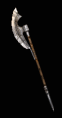
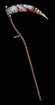
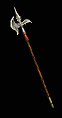
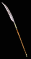

| Polearm | Two Hand Damage | Level Requirement | Min Strength | Min Dexterity | Rangeadder | Durability | Sockets | Speed by Class | Quality Level |
|---|---|---|---|---|---|---|---|---|---|
|

Lochaber Axe |
6 to 58 (32 Avg) | 21 | 80 | - | 2 | 50 | 3 | [10] D - Fast N, S - Normal Ama, Asn, B, P - Slow |
33 |
|
Bill |
14 to 53 (33.5 Avg) | 25 | 95 | - | 2 | 50 | 4 | [0] D, S - Fast Asn, B, N, P - Normal Ama - Slow |
37 |
|

Battle Scythe |
18 to 45 (31.5 Avg) | 25 | 82 | 82 | 1 | 65 | 5 | [-10] D - Very Fast N, P, S - Fast Ama, Asn, B - Normal |
40 |
|
Partizan |
34 to 75 (54.5 Avg) | 23 | 113 | 67 | 3 | 65 | 5 | [10] D - Fast N, S - Normal Ama, Asn, B, P - Slow |
35 |
|

Bec-De-Corbin |
13 to 85 (49 Avg) | 25 | 133 | 91 | 4 | 55 | 6 | [0] D, S - Fast Asn, B, N, P - Normal Ama - Slow |
51 |
|

Grim Scythe |
30 to 70 (50 Avg) | 25 | 140 | 140 | 4 | 55 | 6 | [-10] D - Very Fast N, P, S - Fast Ama, Asn, B - Normal |
55 |